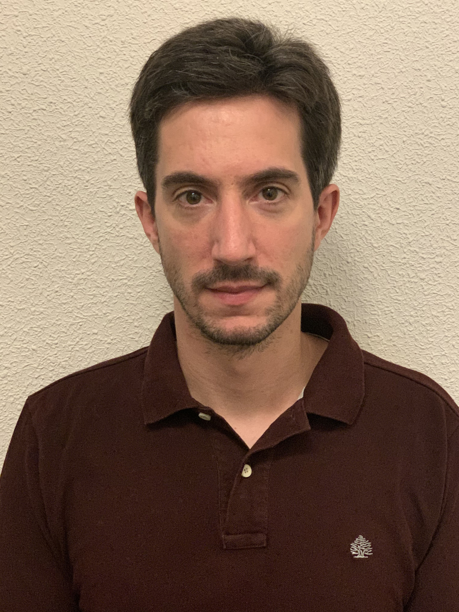

Pablo Crespo

Summary
Pablo has more than 10 years of experience in railway systems for subway, high speed, light rail and conventional lines projects collaborating with several Infrastructure Managers such as ADIF, Metro de Madrid and Metro de Santiago de Chile, as well as with railway suppliers such as Siemens or Alstom.
Education
- MSc. Industrial Engineering (mechanics/machines)
- October 2003 - September 2009
- Escuela Técnica Superior de Ingenieros Industriales
Universidad Politécnica de Madrid
- Merit (7.6)
- MRailway Control, Command and Signalling
- October 2023 - March 2024
- Universidad Politécnica de Madrid
- Dinstiction (9.54)
Work experience
- Metro de Madrid
- Ingineering technician (railway signalling)
- June 2024 - Ongoing
- AECOM
- Railway signalling engineer
- September 2020 - June 2024
- Inse Rail
- Railway signalling engineer
- June 2017 - September 2024
- OLE engineer
- February 2018 - May 2019
- CITEF
- Simulation engineer
- March 2011 - June 2017
- Railway systems engineer
- February 2009 - March 2011
Skills
- Railway systems
- Signalling and ATC:ERTMS, CBTC, DTG ⭐⭐⭐⭐⭐
- OLE ⭐⭐⭐
- Rolling stock ⭐⭐⭐
- Programming
- C++, C# ⭐⭐⭐
- Python ⭐⭐⭐
- VBA ⭐⭐⭐⭐⭐
- LISP ⭐⭐⭐
- Matlab ⭐⭐⭐
- SW
- CAD ⭐⭐⭐⭐⭐
- Office ⭐⭐⭐⭐⭐
- Presto ⭐⭐⭐⭐
- Management ⭐⭐⭐
- Languajes
- Spanish ⭐⭐⭐⭐⭐
- English ⭐⭐⭐⭐
- Italian ⭐⭐
- French ⭐⭐
Publications
- Method for the comparison and characterization of pass-by noise in high-speed trains
- July 2012
- X Congreso Ingeniería del Transporte
- Juan de Dios Sanz, Pablo Crespo, Juan Andrés Brunel
- Adverse aerodynamics effects of a high-speed train under the influence of crosswinds, analysis and optimization of wind fence
- August 2011
- 22nd IAVSD Symposium on dynamics of vehicles on roads and tracks
- Juan de Dios Sanz, Juan Andrés Brunel, Pablo Crespo
Others
Contact Me
My hobbies